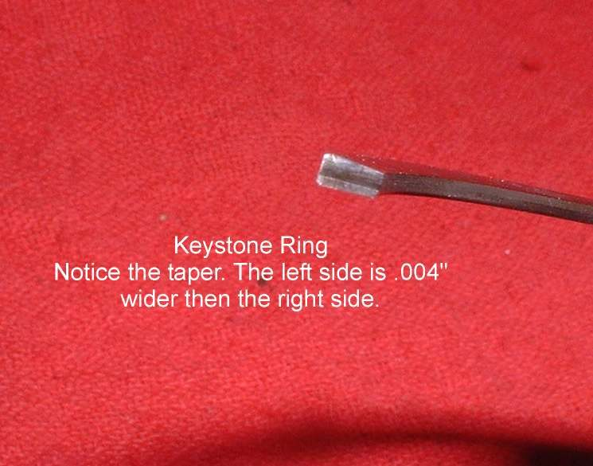
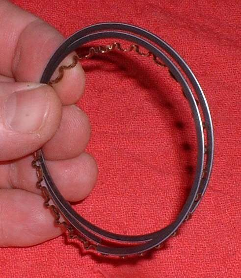
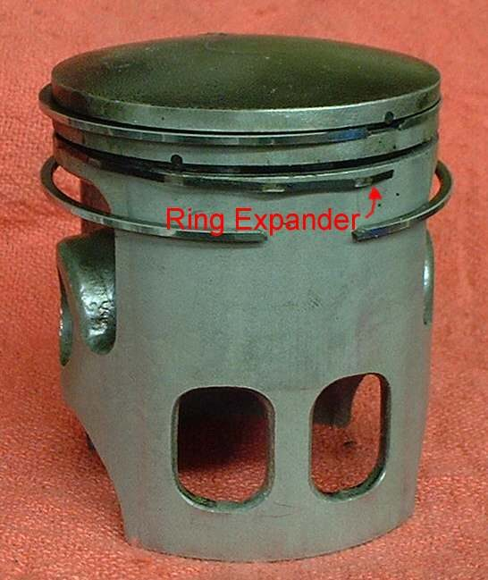

A ring fitted upside down or in the wrong groove does not seal and the engine smokes. Good rings carry a mark on the side that faces up. Some rings, especially cheap sets, carry no mark. This page shows how to tell the types apart and how to decide the right way up. When in doubt, the engine manual and the ring maker's sheet come first.
Safety
- Rings are hard and brittle and the ends are sharp. Open them only as far as needed.
- Wear eye protection when handling rings.
You need
- The new ring set and the old rings, kept in order.
- A caliper and a feeler gauge.
- Your bike's manual and the instructions that came with the set.
The usual ring types
- Top ring. On four-strokes it is often chrome plated on the face that touches the cylinder.
- Second ring. Often dark grey or black with a phosphate coating. Many have a taper on the outer face or a step on the inner edge.
- Oil ring. On four-strokes either a one-piece ring or a three-piece set (two thin rails with a spring expander between). The three-piece type has no up or down side.
- Keystone and Dykes rings. These are used on two-strokes. A keystone ring is wedge shaped in section. A Dykes ring has an L-shaped section with an expander behind it.
- Two-stroke rings have a bevel at one end of the ring gap. The bevel fits over the locating peg in the ring groove.
Steps
- Look for a mark on each ring, either printed in ink or stamped in the metal. The marked side goes up, toward the piston crown.
- If there is no mark and a ring has a taper on its face or inner edge, fit it with the taper facing up.
- If one ring is chrome and one is not, the chrome ring is the top ring.
- If both are plated and one is tapered, the tapered one is the second ring.
- Check each ring's thickness. The top and second rings may differ, and each must match its groove.
- To test for a keystone ring: grip one side of the ring in the jaws of a caliper and tilt the opposite side up and down. A flat ring flexes without rocking. A keystone ring rocks until the wedge edge meets the jaw.
- On two-strokes, turn each ring so the bevelled end sits against the peg.
- Make sure each ring closes completely and smoothly into its groove. If it does not, the ring is wrong for that groove.
- After fitting, space the gaps around the piston, as in Fit piston rings and deglaze the bore.
Check your work
- Marks face up on every marked ring.
- Each ring moves freely in its groove and springs back when pressed in.
- Keystone and Dykes rings are used only where the engine had them.
- Oversize rings match the oversize of the bore and piston, not a larger size.
When to go to a workshop
- The set has no marks, no instructions and the rings differ from the old ones.
- The bore is worn and needs boring. New rings do not cure a worn bore, and many cheap engines have no oversize pistons.